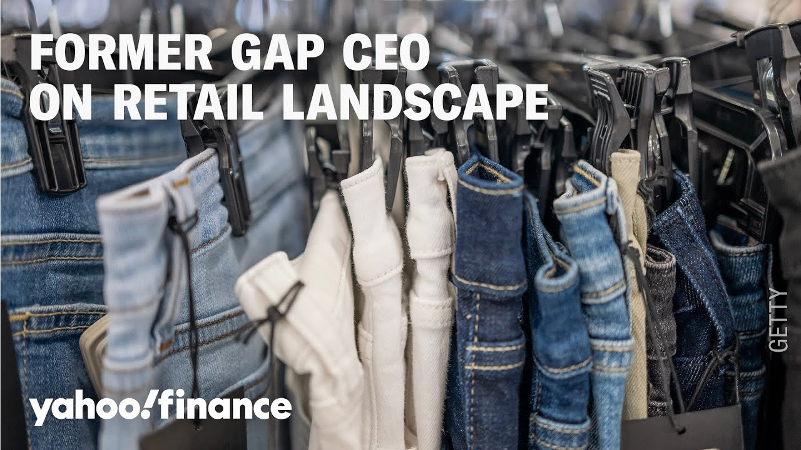

【前Gap CEO谈关税、中国在零售业中的角色、价格上涨、折扣趋势等】
Summary: Gap's stock plunges after warning of tariff impacts, with potential costs of $250M-$300M without mitigation and up to $150M with current efforts. Former Gap CEO Mickey Drexler discusses challenges like supply chain uncertainty, price adjustments, and China's manufacturing dominance, while criticizing discount culture and pricing integrity in retail.
摘要： Gap股价因关税影响预警暴跌，未缓解措施可能导致2.5-3亿美元损失，现有措施下损失或达1.5亿美元。前Gap CEO米奇·德雷克斯勒探讨了供应链不确定性、价格调整和中国制造优势等挑战，同时批评零售业的折扣文化和定价诚信问题。

⏱️ Estimated Reading Time: 14 min
Gap plunging after warning of the impact of terrorists, saying it could cost the company 250 million to $300 million without mitigation efforts and up to $150 million with current mitigation efforts.
Gap因关税影响预警股价暴跌，称若无缓解措施可能损失2.5至3亿美元，现有措施下损失或达1.5亿美元。
Joining us now, we're thrilled to have Mickey Drexler, Alex Mills, CEO and former GAP CEO as well.
现在我们有幸邀请到Alex Mills CEO兼Gap前CEO米奇·德雷克斯勒。
Great to have you, Mickey.
很高兴见到你，米奇。
Nice to be here.
很荣幸来到这里。
I want to get your reaction to these GAAP results.
我想听听你对这些GAP财报的反应。
The stock is on track to erase its year-to-date gains.
该股正抹去年内涨幅。
What do you make of how the company's handling it?
你如何看待公司的应对方式？
Because the last time on Yahoo they asked you all asked me what I thought of Yay.
因为上次在雅虎他们问我如何看待Yay。
You know I know but Mickey but then they all got mad at me when I thought it was I know.
我确实了解情况，但当我表达观点时他们都生气了。
But let's let's talk about GAP this morning.
但今早我们还是谈GAP吧。
What is your thought on how they're handling these tariffs?
你对他们处理关税问题的看法是？
Honestly, I think I said this to you.
老实说，我之前告诉过你。
I can't talk about it because I'm I'm a difficult human being in the retail world and I I'm just going to be a little positive.
我不能多谈，因为我在零售业是个麻烦人物，我尽量保持积极。
How do you think about how the retailers are handling tariffs in general right now?
你如何看待当前零售商们应对关税的总体情况？
Then we're all scared to hell.
我们都吓坏了。
Yeah.
是的。
How, you know, we're all flying blind every day.
我们每天都在盲目应对。
It was two nights ago she cheered because the courts who knows what to do and how do you take a business and not know what the cost of your goods are, right?
两天前她还欢呼法院裁决，但谁知道该怎么办？经营企业却不知道商品成本怎么行？
and and everyone says raising prices doing this and you know Walmart got a lot of attention and anger from some parties but just make a decision whether it's good or bad so we can live with it we are flying blind how do you plan the business how do you you have to put retail tickets on our goods now and you know and then we have to take them all off change them this that and the other thing so that's how I feel and I read about these tiny, you know, uh, China is America's factory headquarters.
大家都在说涨价，沃尔玛引发关注和不满，但总要做出决定才能应对。我们盲目经营，现在要给商品贴价签，又要不断修改。我认为中国就是美国的工厂总部。
Think about it.
想想看。
All these little companies, you can't make stuff.
这些小公司无法自主生产。
And in apparel, there's really no industry, you know, because the seers, the this, you know, we're a great country, but practically speaking, you know, Apple, what are they going to do?
服装业几乎没有产业链，我们虽是强国，但像苹果这样的企业能怎么办？
You know, what are people going to do?
人们能怎么办？
Mhm.
嗯。
And then people are concerned because you know what can you say?
人们很焦虑，这能怎么说？
How are you managing supply chain through an environment like this?
这种环境下如何管理供应链？
Well, uh, no one has any, uh, experience.
没人有相关经验。
What we, well, we're smallalish, so well, the $250 million, I'm sure that's not hard for all the big companies.
我们规模较小，2.5亿美元对大公司可能不算什么。
So, we're probably a percent of that based on sales at Alex Mill.
按Alex Mill的销售额算，我们可能只占1%。
Yeah.
是的。
What we're doing, we're very late.
我们行动太晚了。
and Alex Mill when I left Jay Crew, you know, the the tariffs of a few years back were a warning for all of us to move from China.
我离开Jay Crew时，几年前关税就是撤离中国的预警。
Well, at Alex Mill, long story, we didn't.
但Alex Mill没有行动。
Uh, I'll take the blame, of course, but we didn't move.
责任在我，但我们没搬迁。
And so, we're now moving as quickly as we can.
现在正全力加速搬迁。
What percentage of that is specifically China based for Alex Mill?
Alex Mill有多少比例依赖中国？
Can I whisper it or do I have to say it's too much?
能悄悄说吗？比例太高了。
But, you know, it's a good warning for us.
这对我们是很好警示。
And um we're dealing with it, but not easily.
我们正在应对，但很艰难。
You know, they say prices.
关于价格问题。
We're looking at prices surgically style by style.
我们正逐款精细调整价格。
When someone says they're raising prices, you know, it's like saying all of America is snowing or this selectively.
有人说要涨价，这就像说全美在下雪，实际是有选择的。
and where we have strong franchise businesses where we feel we can take a little extra.
在特许经营强势领域可以适当提价。
But the other thing and stop me if I'm talking too much because I know the clock's ticking.
另外...如果我说太多请打断，时间有限。
This is good context though.
不过这些背景很重要。
Okay.
好的。
The uh the world is discount.
这是个折扣的世界。
It's a discount world.
折扣当道。
I asked Brooke, I won't mention name where she got that blazer.
我问Brooke那件西装外套哪买的（不提店名）。
Beautiful.
很漂亮。
She said my favorite store.
她说是我最喜欢的店。
You know where she got it, right?
你知道哪买的吧？
Oh, okay.
哦好吧。
I'll tell you later.
待会告诉你。
Okay.
好的。
But she got it at a discount company.
其实是在折扣店买的。
Well, I have a feeling I know.
我大概猜到了。
Yeah.
是的。
When you walk into that business, you know, the price is the real price.
进那种店就知道标价就是实价。
Mhm.
嗯。
And I, you know, it's just and that's has nothing to do with tariffs.
这与关税无关。
It has to do with up and down pricing.
而是定价策略问题。
Used to be called that when I started my career.
我入行时叫高低定价法。
Blooming deals.
布鲁明戴尔百货。
It was high low pricing.
就是高低定价。
Yeah.
对。
But you know the integrity of pricing today, you know, I look at the ads when I watch CNN or MSNBC or Yahoo Live, you know, 50% off, everything's on sale.
如今定价诚信缺失，看CNN/MSNBC/雅虎直播广告全是"五折""全场促销"。
Yeah.
是啊。
Prevagen will make someone have a better memory or the brain now they changed it and people I said to our team the other day, I said they said this sweater which is the best sweater.
Prevagen号称增强记忆力，现在改宣传语了。前几天我对团队说，他们说这件毛衣是最好的。
They had six perfect.
有六件完美毛衣。
I said, "You lose all the trust. Say what doesn't work. Say the duck is not cooked enough or whatever."
我说"这会失去信任，应该诚实说明不足"。
And I said, "Just get the real world. Don't because the credibility."
要现实些，别透支信誉。
Yeah.
对。
To me, I don't trust so much today.
如今我不太信任这些。
Right.
确实。
Anyway, so so it's such great context.
总之这背景很重要。
What do retailers do then?
零售商该怎么办？
Like, and not necessarily what they should do, but what do you see them doing?
不是该怎么做，而是实际在怎么做？
Are they compromising on quality?
在降低质量吗？
Are they waiting out the next four years under this administration and just eat the tariffs for four years and then figure it out?
是在等待本届政府四年任期结束，硬扛关税再想办法？
What are they doing?
他们怎么做？
Well, I every time I'm on something, I have a little group of five.
我有个五人智囊团。
Uhhuh.
嗯。
And they're all in different businesses.
来自不同行业。
Most people don't know what to do.
多数人不知所措。
Yeah.
是的。
Because um they're not waiting it out.
他们没有干等。
You know, how could you wait it out?
怎么等得起？
What where's it going? Where's the endg game?
尽头在哪里？
Um I think they're all when I I call them reg I called everyone tariffs who knows and everyone was happy the day before cuz the court said no and then yesterday morning or what then they overturned that.
前天法院否决关税大家还高兴，昨天又推翻了。
Doesn't that show though that maybe you shouldn't spend a ton of money moving out of China because you could spend all that money and then the tariffs could go?
这是否说明不该花大钱撤离中国？可能刚搬完关税又取消了。
A very smart question because Chinese they make the most they're very high quality makers some of them not always the quality is not has come out over the last few years from my opinion uh for me it's always quality style value fair pricing and we're very fairly priced and I'm not one of those big markup up, put it on sale.
聪明的问题。中国制造质量很高（虽近年偶有下滑）。我注重品质、款式、价值和公平定价，我们定价公道，不搞高价再打折。
We don't We have a little tiny stuff on sale today.
我们只有少量商品打折。
You have to get rid of the goods, but uh I think people are at a loss.
清货需要打折，但人们现在很迷茫。
We're trying to, you know, get We hired someone new from my old company.
我们新聘了老同事。
She's been with me 28 years.
共事28年。
She's the new head of production for the last two or three months.
这2-3个月新任生产主管。
That job is one of the most important jobs in any industry.
这是各行业最关键岗位之一。
How do you make the goods? Where do you make it?
如何生产？在哪生产？
She has a lot of networks.
她人脉很广。
We're moving goods out and a lot of vendors who we know were not big customers are mitigating the issue.
我们正转移生产，许多非大客户的供应商在分担风险。
They'll split it. They'll do this.
他们会分摊成本。
And in America, we look at some people, there's not a lot of choice because it's not just pricing.
在美国选择有限，因为不仅是价格问题。
It's about the skilled workers, the craftsmanship, the quality that goes into 100%.
还涉及技术工人、工艺和品质保障。
It's nothing against America, but you know, they're brilliant at we are a lot of other things, but apparel sewing is not.
不是贬低美国，我们在很多领域出色，但服装缝制不是强项。
I want to ask you something else here, especially knowing about your time at Bloomingdales, knowing where that sits within Macy's as well, who we just got earnings from recently.
你在布鲁明戴尔（隶属梅西百货）的经历...刚公布财报...
You at Alex Mill, you sell into Bloomingdale, so you have a good partnership there as well as with some other retail partners.
Alex Mill供货布鲁明戴尔，有良好合作关系。
That's a very highincome consumer that we're talking about, though.
但那是高收入客群。
Okay.
好的。
What are you seeing among the high-income consumer who's been told that you're the ones upholding the the broader economy and the spending right now?
高收入群体被说是支撑经济的主力消费者，你观察到什么？
And if you collapse or if you pull back, then the rest of it might start to tread.
若他们收缩消费，整体经济可能下滑。
I always ask, who are the authorities that say that?
我总问：谁在这么说？
Do you you know, Brooke was a perfect example?
比如Brooke就是典型例子。
She looks like dot dot dot.
她看起来...
The blazer is beautiful.
那件西装很漂亮。
I felt it.
我摸过。
Did you just tell Brooke to come in the studio here?
你刚让Brooke进演播室了吗？
Yeah.
是的。
Brooke, you want to show the blazer and the the I think the lower income for sure going to get hurt.
Brooke展示下外套...低收入群体肯定受影响。
Here's Brooke.
这是Brooke。
Uh I'm not going to tell my friend she doesn't like me, but I said look at the blazer, you guys.
我朋友会不高兴，但看看这件外套。
I mean, I'll admit this blazer is actually from TJ Maxx.
其实来自TJ Maxx折扣店。
It's beautiful.
很漂亮。
Okay.
好的。
And yeah, and it looks amazing.
看起来很棒。
My friend Carol there told me never to mention her name, but you know the difference there in their business.
朋友Carol不让我提她名字，但他们的商业模式不同。
You go in there and the prices are the prices.
那里标价就是实价。
Yeah.
对。
Right.
没错。
You didn't have to see on sale 40%.
不用看"四折"标签。
All right.
好吧。
Brooke always now they're they're going to think she's a twin of yours.
大家要以为Brooke是你双胞胎了。
Anyway, so um it's just very difficult to and and there's a whole other program on doing business today at retail with hosta.
总之现在零售业很难做...还有档零售商业节目。
We do sell uh shops mostly because we sell good shops who who show our goods and we also sell them because we we have minimum quantities from factories right and so you have to buy a hundred of a color which is actually a lot for us and my old jobs it my old jobs didn't mean anything Mickey we could talk all day here we appreciate you joining us here this morning thanks so much
我们主要通过优质店铺销售，且工厂有最低起订量（每色100件对我们很多）。老东家经历不重要...本可聊整天，感谢今早参与。
Thank you.
谢谢。